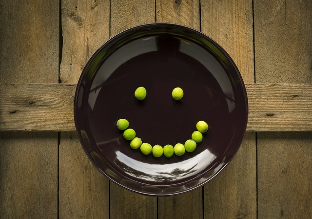

Här finns lite fakta om mig som har gjort denna hemsida.

Hej kul att just du har hittat till min hemsida här står lite fakta om vem jag är och vad jag tycker om att göra.
Jag heter Pontus jag bor i skåne och jag gillar att laga mat och baka. Jag är 15 år och förutom att laga mat gillar jag att simma och programmera.
Kontakta mig om det blir något fel eller om du har några frågor.
Om ni vill komma i kontakt med mig så är min mailadress:pontussim@gmail.com